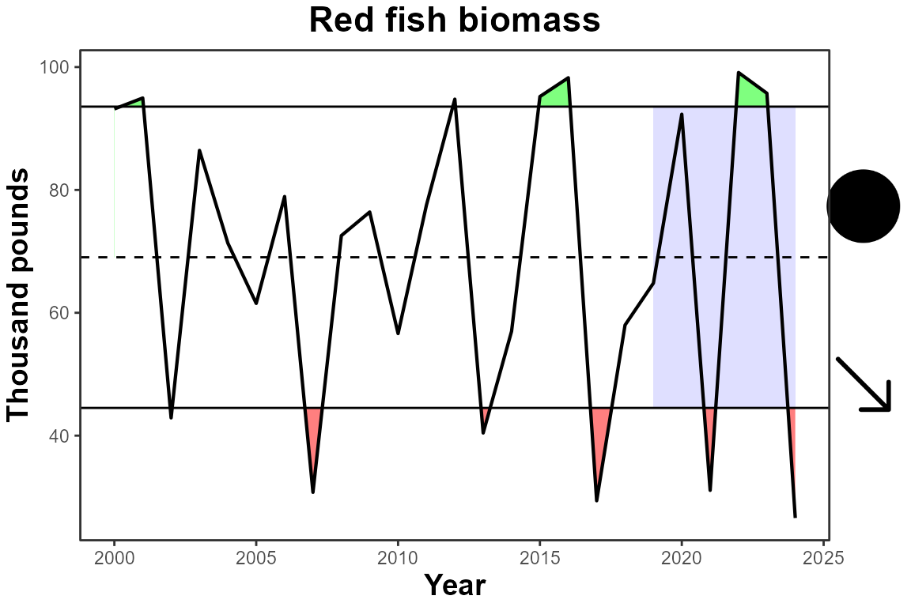
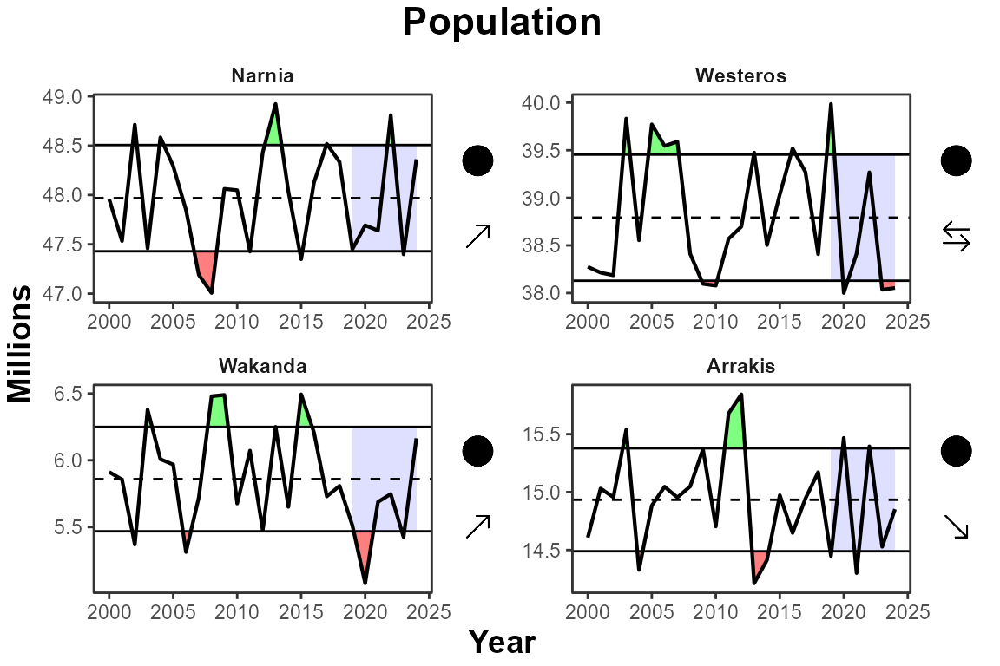
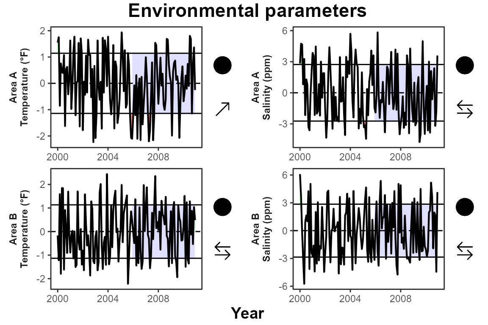

How to use IEAnalyzeR
How_to_use_IEAnalyzeR.RmdIntroduction
This vignette demonstrates how to use the main functions in IEAnalyzeR to format and plot indicator time series data of varying formats.
library(IEAnalyzeR)Saving data in the proper format
In order to run data through the data_prep function in IEAnalyzeR, which prepares it for plotting and pulls out relevant information, the data need to be formatted in a specific way and saved as a csv file.
The function convert_cleaned_data will help you here. Every dataset needs to have time as the first column (either annual or monthly) and numeric values for the corresponding metrics in the remaining columns. convert_cleaned_data will add metadata in the first 3 rows of the data frame that data_prep will use for labeling.
Example with a single metric. In this example annual biomass (thousand pounds) of “Red fish” was recorded from 2000 to 2024.
head(single_metric)
#> year red_fish
#> 1 2000 93.18448
#> 2 2001 94.96603
#> 3 2002 42.89116
#> 4 2003 86.43581
#> 5 2004 71.33964
#> 6 2005 61.52768
#Define header components for the data rows (ignore year)
indicator_names <- c("Red fish biomass")
unit_names <- c("Thousand pounds")
extent_names <- c("")
# 3. Call the function
single_table <- convert_cleaned_data(single_metric, indicator_names, unit_names, extent_names)
head(single_table)
#> indicator Red fish biomass
#> 1 unit Thousand pounds
#> 2 extent
#> 3 2000 93.1844834797084
#> 4 2001 94.9660330638289
#> 5 2002 42.8911627829075
#> 6 2003 86.435810085386Example with four metrics representing different areas. In this example population in millions was recorded annually for four areas from 2000 to 2024.
head(annual_by_area)
#> year Narnia Westeros Wakanda Arrakis
#> 1 2000 47.95694 38.27504 5.911761 14.60771
#> 2 2001 47.53304 38.21399 5.855812 15.03110
#> 3 2002 48.71302 38.18572 5.368780 14.95590
#> 4 2003 47.45829 39.83290 6.379288 15.53770
#> 5 2004 48.58389 38.55412 6.008324 14.32786
#> 6 2005 48.29355 39.77159 5.968176 14.88355
#Define header components for the data rows (ignore year)
indicator_names <- rep("Population", ncol(annual_by_area)-1)
unit_names <- rep("Millions", ncol(annual_by_area)-1)
extent_names <- c("Narnia", "Westeros", "Wakanda", "Arrakis")
# 3. Call the function
multi_table <- convert_cleaned_data(annual_by_area, indicator_names, unit_names, extent_names)
head(multi_table)
#> indicator Population Population Population Population
#> 1 unit Millions Millions Millions Millions
#> 2 extent Narnia Westeros Wakanda Arrakis
#> 3 2000 47.9569377740845 38.2750355172902 5.91176089260262 14.6077055237256
#> 4 2001 47.5330411568284 38.2139893737622 5.85581202909816 15.0311023639515
#> 5 2002 48.7130214325152 38.1857187915593 5.36878002190497 14.9559015464038
#> 6 2003 47.4582929555327 39.8328979103826 6.3792876296211 15.537704449147Example with monthly data and different units. In this example the environmental parameters temperature (°F) and salinity (ppm) were measured at two areas on a monthly basis for 10 years.
head(multi_unit_monthly)
#> date temp_a salinity_a temp_b salinity_b
#> 1 2000-01 28.65922 16.31507 27.00010 19.65256
#> 2 2000-02 28.74830 19.37386 25.54092 19.06942
#> 3 2000-03 26.14456 18.50483 28.47703 15.51251
#> 4 2000-04 28.32179 15.79821 25.82020 10.75599
#> 5 2000-05 27.56698 18.21404 28.70018 10.22700
#> 6 2000-06 27.07638 11.13719 28.54701 15.13240
#Define header components for the data rows (ignore year)
indicator_names <- rep("Environmental parameters", ncol(multi_unit_monthly)-1)
unit_names <- c("Temperature (°F)", "Salinity (ppm)", "Temperature (°F)", "Salinity (ppm)")
extent_names <- c("Area A", "Area A", "Area B", "Area B")
# 3. Call the function
monthly_table <- convert_cleaned_data(multi_unit_monthly, indicator_names, unit_names, extent_names)
head(monthly_table)
#> indicator Environmental parameters Environmental parameters
#> 1 unit Temperature (°F) Salinity (ppm)
#> 2 extent Area A Area A
#> 3 2000-01 28.65922 16.31507
#> 4 2000-02 28.74830 19.37386
#> 5 2000-03 26.14456 18.50483
#> 6 2000-04 28.32179 15.79821
#> Environmental parameters Environmental parameters
#> 1 Temperature (°F) Salinity (ppm)
#> 2 Area B Area B
#> 3 27.00010 19.65256
#> 4 25.54092 19.06942
#> 5 28.47703 15.51251
#> 6 25.82020 10.75599Now that our datasets are properly formatted with metadata rows, we will export them as csvs. Here we will save the files to a temporary location, but if you are working on a Gulf IEA Ecosystem Status Report, you will want to save this file to the formatted_csvs folder in the appropriate data folder depending on your data type.
# Create a temporary file path for the CSV output
temp_path1 <- tempfile(pattern = "single_output", fileext = ".csv")
temp_path2 <- tempfile(pattern = "multi_output", fileext = ".csv")
temp_path3 <- tempfile(pattern = "monthly_output", fileext = ".csv")
#Save each table to its unique temporary file path
write.csv(single_table, file = temp_path1, row.names = FALSE)
write.csv(multi_table, file = temp_path2, row.names = FALSE)
write.csv(monthly_table, file = temp_path3, row.names = FALSE)Using the data_prep function
The data_prep function is the core function of IEAnalyzeR. (Add some text here about what it does). You can simply specify the file path to your csv within the function.
final_single_data <- IEAnalyzeR::data_prep(temp_path1)
str(final_single_data)
#> List of 4
#> $ data :'data.frame': 25 obs. of 2 variables:
#> ..$ year : num [1:25] 2000 2001 2002 2003 2004 ...
#> ..$ value: num [1:25] 93.2 95 42.9 86.4 71.3 ...
#> $ ribbon:'data.frame': 40 obs. of 5 variables:
#> ..$ year : num [1:40] 2000 2001 2002 2003 2004 ...
#> ..$ value: num [1:40] 93.2 95 42.9 86.4 71.3 ...
#> ..$ min : num [1:40] 69 69 42.9 69 69 ...
#> ..$ max : num [1:40] 93.2 95 69 86.4 71.3 ...
#> ..$ mean : num [1:40] 69 69 69 69 69 ...
#> $ labs : chr [1:3, 1:2] "indicator" "unit" "extent" "Red fish biomass" ...
#> $ vals :'data.frame': 1 obs. of 18 variables:
#> ..$ mean : num 69
#> ..$ sd : num 24.5
#> ..$ minyear : num 2000
#> ..$ maxyear : num 2024
#> ..$ allminyear: num 2000
#> ..$ allmaxyear: num 2024
#> ..$ mean_tr : chr "circle_fill"
#> ..$ mean_img : chr "C:/Users/brittanytroast/AppData/Local/R/win-library/4.4/IEAnalyzeR/images/trend_symb/circle_fill.png"
#> ..$ slope_tr : chr "arrow_down"
#> ..$ slope_img : chr "C:/Users/brittanytroast/AppData/Local/R/win-library/4.4/IEAnalyzeR/images/trend_symb/arrow_down.png"
#> ..$ mean_sym : chr "●"
#> ..$ slope_sym : chr "↓"
#> ..$ mean_word : chr "within"
#> ..$ slope_word: chr "a decreasing"
#> ..$ mid_y : num 62.9
#> ..$ min_y : num 26.6
#> ..$ max_y : num 99.1
#> ..$ df_nm : chr "C:\\Users\\BRITTA~1\\AppData\\Local\\Temp\\RtmpyoLs8i\\single_output2c0264158f9.csv"
final_multi_data <- IEAnalyzeR::data_prep(temp_path2, subind = "extent")
str(final_multi_data)
#> List of 4
#> $ data :'data.frame': 100 obs. of 4 variables:
#> ..$ year : num [1:100] 2000 2000 2000 2000 2001 ...
#> ..$ value: num [1:100] 47.96 38.28 5.91 14.61 47.53 ...
#> ..$ subnm: chr [1:100] "Narnia" "Westeros" "Wakanda" "Arrakis" ...
#> ..$ id : num [1:100] 1 2 3 4 1 2 3 4 1 2 ...
#> $ ribbon:'data.frame': 151 obs. of 7 variables:
#> ..$ year : num [1:151] 2000 2001 2002 2003 2004 ...
#> ..$ value: num [1:151] 48 47.5 48.7 47.5 48.6 ...
#> ..$ subnm: chr [1:151] "Narnia" "Narnia" "Narnia" "Narnia" ...
#> ..$ id : num [1:151] 1 1 1 1 1 1 1 1 1 1 ...
#> ..$ min : num [1:151] 48 47.5 48 47.5 48 ...
#> ..$ max : num [1:151] 48 48 48.7 48 48.6 ...
#> ..$ mean : num [1:151] 48 48 48 48 48 ...
#> $ labs : chr [1:3, 1:5] "indicator" "unit" "extent" "Population" ...
#> $ vals :'data.frame': 4 obs. of 20 variables:
#> ..$ allminyear: num [1:4] 2000 2000 2000 2000
#> ..$ allmaxyear: num [1:4] 2024 2024 2024 2024
#> ..$ minyear : num [1:4] 2000 2000 2000 2000
#> ..$ maxyear : num [1:4] 2024 2024 2024 2024
#> ..$ mean : num [1:4] 47.97 38.79 5.86 14.93
#> ..$ sd : num [1:4] 0.539 0.662 0.391 0.445
#> ..$ mean_tr : chr [1:4] "circle_fill" "circle_fill" "circle_fill" "circle_fill"
#> ..$ mean_img : chr [1:4] "C:/Users/brittanytroast/AppData/Local/R/win-library/4.4/IEAnalyzeR/images/trend_symb/circle_fill.png" "C:/Users/brittanytroast/AppData/Local/R/win-library/4.4/IEAnalyzeR/images/trend_symb/circle_fill.png" "C:/Users/brittanytroast/AppData/Local/R/win-library/4.4/IEAnalyzeR/images/trend_symb/circle_fill.png" "C:/Users/brittanytroast/AppData/Local/R/win-library/4.4/IEAnalyzeR/images/trend_symb/circle_fill.png"
#> ..$ slope_tr : chr [1:4] "arrow_up" "arrow_leftright" "arrow_up" "arrow_down"
#> ..$ slope_img : chr [1:4] "C:/Users/brittanytroast/AppData/Local/R/win-library/4.4/IEAnalyzeR/images/trend_symb/arrow_up.png" "C:/Users/brittanytroast/AppData/Local/R/win-library/4.4/IEAnalyzeR/images/trend_symb/arrow_leftright.png" "C:/Users/brittanytroast/AppData/Local/R/win-library/4.4/IEAnalyzeR/images/trend_symb/arrow_up.png" "C:/Users/brittanytroast/AppData/Local/R/win-library/4.4/IEAnalyzeR/images/trend_symb/arrow_down.png"
#> ..$ mean_sym : chr [1:4] "●" "●" "●" "●"
#> ..$ slope_sym : chr [1:4] "↑" "→" "↑" "↓"
#> ..$ mean_word : chr [1:4] "within" "within" "within" "within"
#> ..$ slope_word: chr [1:4] "an increasing" "a stable" "an increasing" "a decreasing"
#> ..$ subnm : chr [1:4] "Narnia" "Westeros" "Wakanda" "Arrakis"
#> ..$ id : num [1:4] 1 2 3 4
#> ..$ mid_y : num [1:4] 47.96 38.99 5.79 15.03
#> ..$ min_y : num [1:4] 47.01 38 5.08 14.21
#> ..$ max_y : num [1:4] 48.92 39.99 6.49 15.84
#> ..$ df_nm : chr [1:4] "C:\\Users\\BRITTA~1\\AppData\\Local\\Temp\\RtmpyoLs8i\\multi_output2c03aa96b43.csv" "C:\\Users\\BRITTA~1\\AppData\\Local\\Temp\\RtmpyoLs8i\\multi_output2c03aa96b43.csv" "C:\\Users\\BRITTA~1\\AppData\\Local\\Temp\\RtmpyoLs8i\\multi_output2c03aa96b43.csv" "C:\\Users\\BRITTA~1\\AppData\\Local\\Temp\\RtmpyoLs8i\\multi_output2c03aa96b43.csv"
# With monthly data, we need to specify the anomaly argument. Either monthly or standardized monthly.
final_monthly_data <- IEAnalyzeR::data_prep(temp_path3, anomaly = "monthly", subind = "extent")
str(final_monthly_data)
#> List of 4
#> $ data :'data.frame': 528 obs. of 4 variables:
#> ..$ year : num [1:528] 2000 2000 2000 2000 2000 ...
#> ..$ value: num [1:528] 1.549 2.829 -0.168 6.098 1.753 ...
#> ..$ subnm: chr [1:528] "Area A" "Area A" "Area B" "Area B" ...
#> ..$ id : num [1:528] 1 2 3 4 1 2 3 4 1 2 ...
#> $ ribbon:'data.frame': 792 obs. of 7 variables:
#> ..$ year : num [1:792] 2000 2000 2000 2000 2000 ...
#> ..$ value: num [1:792] 1.549 1.753 -0.854 0.756 0.427 ...
#> ..$ subnm: chr [1:792] "Area A" "Area A" "Area A" "Area A" ...
#> ..$ id : num [1:792] 1 1 1 1 1 1 1 1 1 1 ...
#> ..$ min : num [1:792] -0.000000000000000162 -0.000000000000000162 -0.853880000000000194 -0.000000000000000162 -0.000000000000000162 ...
#> ..$ max : num [1:792] 1.548823636363636069 1.753009999999999735 -0.000000000000000162 0.755903636363637332 0.426761818181820018 ...
#> ..$ mean : num [1:792] -0.000000000000000162 -0.000000000000000162 -0.000000000000000162 -0.000000000000000162 -0.000000000000000162 ...
#> $ labs : chr [1:3, 1:5] "indicator" "unit" "extent" "Environmental parameters" ...
#> $ vals :'data.frame': 4 obs. of 20 variables:
#> ..$ allminyear: num [1:4] 2000 2000 2000 2000
#> ..$ allmaxyear: num [1:4] 2011 2011 2011 2011
#> ..$ minyear : num [1:4] 2000 2000 2000 2000
#> ..$ maxyear : num [1:4] 2011 2011 2011 2011
#> ..$ mean : num [1:4] -0.0000000000000001616 -0.0000000000000001078 -0.0000000000000001616 0.0000000000000000269
#> ..$ sd : num [1:4] 1.14 2.73 1.13 2.85
#> ..$ mean_tr : chr [1:4] "circle_fill" "circle_fill" "circle_fill" "circle_fill"
#> ..$ mean_img : chr [1:4] "C:/Users/brittanytroast/AppData/Local/R/win-library/4.4/IEAnalyzeR/images/trend_symb/circle_fill.png" "C:/Users/brittanytroast/AppData/Local/R/win-library/4.4/IEAnalyzeR/images/trend_symb/circle_fill.png" "C:/Users/brittanytroast/AppData/Local/R/win-library/4.4/IEAnalyzeR/images/trend_symb/circle_fill.png" "C:/Users/brittanytroast/AppData/Local/R/win-library/4.4/IEAnalyzeR/images/trend_symb/circle_fill.png"
#> ..$ slope_tr : chr [1:4] "arrow_up" "arrow_leftright" "arrow_leftright" "arrow_leftright"
#> ..$ slope_img : chr [1:4] "C:/Users/brittanytroast/AppData/Local/R/win-library/4.4/IEAnalyzeR/images/trend_symb/arrow_up.png" "C:/Users/brittanytroast/AppData/Local/R/win-library/4.4/IEAnalyzeR/images/trend_symb/arrow_leftright.png" "C:/Users/brittanytroast/AppData/Local/R/win-library/4.4/IEAnalyzeR/images/trend_symb/arrow_leftright.png" "C:/Users/brittanytroast/AppData/Local/R/win-library/4.4/IEAnalyzeR/images/trend_symb/arrow_leftright.png"
#> ..$ mean_sym : chr [1:4] "●" "●" "●" "●"
#> ..$ slope_sym : chr [1:4] "↑" "→" "→" "→"
#> ..$ mean_word : chr [1:4] "within" "within" "within" "within"
#> ..$ slope_word: chr [1:4] "an increasing" "a stable" "a stable" "a stable"
#> ..$ subnm : chr [1:4] "Area A" "Area A" "Area B" "Area B"
#> ..$ id : num [1:4] 1 2 3 4
#> ..$ mid_y : num [1:4] -0.148 0.536 0.111 0.182
#> ..$ min_y : num [1:4] -2.23 -4.76 -2.22 -5.73
#> ..$ max_y : num [1:4] 1.94 5.83 2.44 6.1
#> ..$ df_nm : chr [1:4] "C:\\Users\\BRITTA~1\\AppData\\Local\\Temp\\RtmpyoLs8i\\monthly_output2c04ee52061.csv_monthly_anom" "C:\\Users\\BRITTA~1\\AppData\\Local\\Temp\\RtmpyoLs8i\\monthly_output2c04ee52061.csv_monthly_anom" "C:\\Users\\BRITTA~1\\AppData\\Local\\Temp\\RtmpyoLs8i\\monthly_output2c04ee52061.csv_monthly_anom" "C:\\Users\\BRITTA~1\\AppData\\Local\\Temp\\RtmpyoLs8i\\monthly_output2c04ee52061.csv_monthly_anom"Plotting the data
IEAnalyzeR includes a standard plotting function (plot_fn_obj) that will plot the time series data after it has been passed through the data prep function. The trend = T argument will show the recent 5 year trend.
Example with the single metric dataset:
IEAnalyzeR::plot_fn_obj(final_single_data, trend = T)
Example with the multi-area data:
IEAnalyzeR::plot_fn_obj(final_multi_data, trend = T)
Example with the monthly data:
IEAnalyzeR::plot_fn_obj(final_monthly_data, trend = T, sep_ylabs = TRUE, ylab_sublabel = c("extent", "unit"))